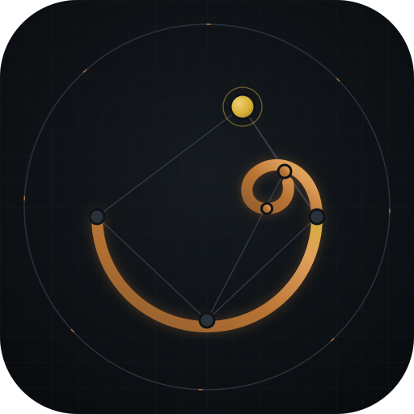
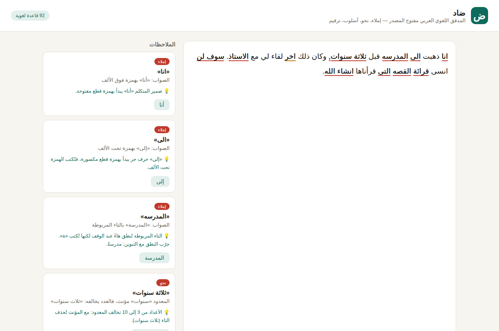

✓
تدقيق عربي عميق
كشف الأخطاء الإملائية والنحوية والأسلوبية مع اقتراحات قابلة للتطبيق مباشرة.

ضادتدقيق لغوي، تحليل أسلوبي، وإعادة صياغة فورية داخل تطبيق أصلي سريع. النص يبقى على جهازك افتراضيًا، وتعمل الأدوات الأساسية حتى دون اتصال.

واجهة عربية مصممة للعمل اليومي، مع محرك Rust محلي وطبقة WebAssembly متوافقة مع الويب وPWA.
كشف الأخطاء الإملائية والنحوية والأسلوبية مع اقتراحات قابلة للتطبيق مباشرة.
بدائل واضحة ومهنية تحافظ على المعنى والسياق بدل الاستبدال السطحي للكلمات.
افتح التدقيق السريع من أي تطبيق عبر Option+Space على macOS أو Alt+Space على Windows.
حوارات نظامية لملفات DOCX وPDF وMarkdown وTXT، مع تجربة متسقة على المنصتين.
تنفيذ أصلي منخفض التأخير عبر Tauri IPC مع رجوع تلقائي إلى WASM في المتصفح.
تظل وظائف التحرير الأساسية متاحة محليًا، دون فرض رفع النصوص إلى خدمة سحابية.
توجّه الأزرار إلى أحدث إصدار موثوق في GitHub Releases. تتحقق صفحة الإصدار من المعمارية والصيغة قبل التثبيت.
المتطلبات: macOS 10.15 أو أحدث، أو Windows 10/11 مع WebView2.
تُفضّل بنية ضاد التنفيذ المحلي، وتفصل بوضوح بين واجهة التحرير ومحرك التحليل وأصول النماذج.
تحليل Rust وONNX وWASM محلي داخل التطبيق.
قدرات Tauri مقيدة للنوافذ والأوامر المطلوبة فقط.
يمكن تشغيل المحرر والتدقيق دون حساب أو اتصال دائم.
جرّب الويب الآن، أو نزّل النسخة الأصلية لأفضل أداء.